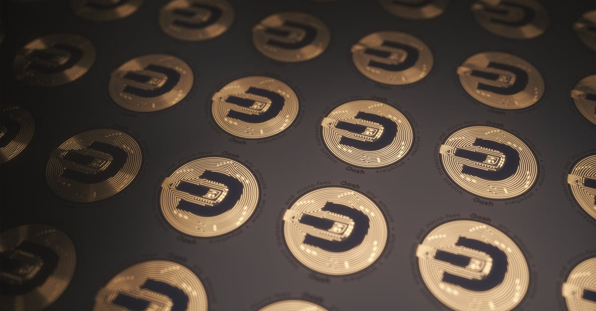

Le Séisme Politique et Financier: Quand Warren S'attaque à Tether
L'écosystème des cryptomonnaies, souvent perçu comme un bastion d'innovation et de décentralisation, se retrouve régulièrement au cœur de tempêtes réglementaires et politiques. Récemment, l'une des figures les plus critiques envers ce secteur, la sénatrice américaine Elizabeth Warren, a de nouveau fait les gros titres. Accompagnée de son homologue Ron Wyden, elle a adressé des lettres acerbes à Howard Lutnick, PDG de Cantor Fitzgerald et candidat potentiel au poste de secrétaire au Commerce, ainsi qu'à Paolo Ardoino, le PDG de Tether. L'objet de leur courroux ? Un prêt présumé de Tether à la famille ou à une entité liée à Lutnick, une révélation qui secoue les fondations de la confiance dans le plus grand stablecoin du monde.
👉 À lire : Tether fusionne: Un géant crypto-minier émerge, quelle IA pour trader?
Cette démarche n'est pas anodine. Elle met en lumière non seulement les préoccupations persistantes concernant la transparence des réserves de Tether, mais aussi les conflits d'intérêts potentiels qui pourraient émerger lorsque des acteurs clés de la finance traditionnelle et de la politique s'entremêlent avec le monde des actifs numériques. Pour les investisseurs et, plus spécifiquement, pour les agents IA de trading crypto qui opèrent 24h/24, de telles informations ne sont pas de simples anecdotes. Elles sont des signaux critiques, des points de données qui peuvent influencer la stabilité du marché, la liquidité et la perception du risque. La capacité d'un stablecoin à maintenir son ancrage au dollar est sa raison d'être, et toute remise en question de cette stabilité peut avoir des répercussions en cascade, forçant les algorithmes à réévaluer leurs stratégies et leurs expositions. La question n'est plus de savoir si la crypto est régulée, mais plutôt comment elle sera régulée et quelles seront les conséquences pour tous les participants, y compris les intelligences artificielles les plus sophistiquées.
👉 À lire : Tether: 70M$ de Bitcoin en plus, ses réserves dépassent 97 000 BTC
Au Cœur de l'Affaire: Les Allégations, les Acteurs et les Enjeux de Transparence
L'affaire tourne autour d'une information rapportée par le Wall Street Journal, selon laquelle Tether aurait accordé un prêt significatif à une entité associée à la famille de Howard Lutnick, via StoneX, une société de services financiers dont Lutnick est un actionnaire majeur et qui a des liens étroits avec Cantor Fitzgerald. La somme et les conditions de ce prêt restent floues, mais son existence même soulève une pléthère de questions éthiques et réglementaires. Pourquoi Tether, un émetteur de stablecoin censé maintenir des réserves liquides et transparentes pour soutenir la valeur de son jeton, s'engagerait-il dans de telles transactions ? Et quel est le rôle exact de Lutnick dans cette équation, d'autant plus qu'il est pressenti pour un poste gouvernemental de premier plan ?
Les sénateurs Warren et Wyden, connus pour leur vigilance envers les risques systémiques et la protection des consommateurs, voient dans cette situation un terrain fertile pour des conflits d'intérêts potentiels. « La confiance dans les marchés financiers repose sur la transparence et l'intégrité, » a déclaré un analyste fictif de CryptoMind AI, « et lorsque ces principes sont mis à mal par des accords opaques impliquant des acteurs aussi centraux que Tether et des personnalités politiques, l'ensemble de l'écosystème en souffre. » Les lettres demandent des éclaircissements sur la nature du prêt, la diligence raisonnable effectuée par Tether, et les mesures prises pour éviter toute apparence de favoritisme ou de manipulation. Pour les systèmes de trading basés sur l'IA, l'analyse de ces dynamiques est cruciale. Ils doivent non seulement surveiller les données de prix, mais aussi le sentiment général du marché, les nouvelles réglementaires et les réputations des acteurs clés, car ce sont ces facteurs qui peuvent déclencher des mouvements de marché imprévus, bien au-delà des simples indicateurs techniques.
Tether: Le Géant aux Pieds d'Argile? Une Analyse de son Rôle Crucial
Tether (USDT) n'est pas un acteur anodin dans l'univers crypto. C'est le plus grand stablecoin par capitalisation boursière, agissant comme le pivot de la liquidité pour une multitude d'échanges et de transactions. Son rôle est de fournir une passerelle stable entre le monde fiduciaire et la volatilité inhérente aux cryptomonnaies. Des milliards de dollars de USDT sont échangés quotidiennement, facilitant le trading, le transfert de valeur et l'accès aux marchés décentralisés. Mais cette position dominante s'accompagne d'une histoire parsemée de controverses, principalement liées à l'opacité de ses réserves.
Depuis des années, des doutes planent sur la nature exacte et la liquidité des actifs qui soutiennent chaque USDT. Bien que Tether ait fait des efforts pour améliorer sa transparence, notamment en publiant des attestations régulières, l'affaire du prêt à la famille Lutnick ravive de vieilles craintes. « La crédibilité d'un stablecoin est sa monnaie la plus précieuse, » souligne un expert fictif du secteur. « Si les utilisateurs doutent que chaque USDT soit réellement soutenu par un dollar ou un équivalent liquide, la panique peut vite s'installer, menaçant le 'peg' et potentiellement déclenchant un effet domino sur l'ensemble du marché. » Pour les agents IA de trading, la santé de Tether est un indicateur de risque macroéconomique majeur. Ils sont programmés pour surveiller les volumes de trading de stablecoins, les taux de financement, et les variations infimes de leur parité avec le dollar. Une divergence significative de l'USDT par rapport à 1$ serait un signal d'alarme retentissant, poussant les algorithmes à ajuster instantanément leurs positions, à rechercher des opportunités d'arbitrage ou à réduire l'exposition au risque.

Les Enjeux Réglementaires et la Question de la Confiance: Un Futur Sous Haute Surveillance
Cette nouvelle affaire autour de Tether intervient à un moment critique pour la régulation des cryptomonnaies à l'échelle mondiale. Les législateurs, en particulier aux États-Unis, cherchent désespérément à encadrer un secteur qui a connu une croissance exponentielle mais aussi son lot de scandales, de faillites et de manipulations. Les stablecoins, en raison de leur nature hybride (à la fois actif numérique et ancré à une monnaie fiduciaire), sont devenus une cible privilégiée pour les régulateurs qui craignent leur potentiel de déstabilisation financière si leur gestion est défaillante.
L'insistance de la sénatrice Warren n'est pas seulement une attaque contre Tether ou Lutnick ; c'est une pression systémique pour une plus grande transparence et des garde-fous plus solides pour l'ensemble de l'industrie crypto.
« Le manque de clarté sur la composition des réserves de stablecoins et les transactions non conventionnelles qu'ils pourraient effectuer sont des bombes à retardement pour la stabilité financière, »selon un commentateur fictif. Cette situation met en exergue le défi constant pour l'adoption institutionnelle des cryptomonnaies. Comment les grandes institutions peuvent-elles s'engager pleinement si les fondations mêmes de la liquidité numérique sont sujettes à de telles interrogations ? Pour les systèmes d'IA de trading, l'intégration de ce facteur de risque réglementaire est essentielle. Les algorithmes doivent être capables d'évaluer non seulement les risques de marché, mais aussi les risques politiques et réglementaires, qui peuvent entraîner des changements législatifs brusques et des impacts profonds sur la valorisation des actifs. Une IA performante doit être capable de « lire entre les lignes » des déclarations officielles et d'anticiper les prochaines étapes des régulateurs pour ajuster ses stratégies de manière proactive.
Répercussions sur le Marché et l'Écosystème Crypto: Anticiper l'Inattendu
L'onde de choc d'une telle révélation, bien que non encore pleinement quantifiée, peut avoir des répercussions significatives sur l'ensemble de l'écosystème crypto. La confiance est la monnaie ultime dans les marchés financiers, et encore plus dans un espace aussi jeune et volatil que celui des cryptomonnaies. Si la confiance en Tether venait à s'éroder de manière substantielle, les scénarios pourraient inclure :
- Une pression de vente sur l'USDT : Les détenteurs pourraient chercher à échanger leurs USDT contre d'autres stablecoins (USDC, DAI) ou directement contre des monnaies fiduciaires, ce qui pourrait tester la capacité de Tether à maintenir son peg.
- Volatilité accrue du Bitcoin et des altcoins : Tether étant un couple de trading majeur, toute incertitude autour de lui peut entraîner une liquidation massive sur les marchés, poussant les prix du Bitcoin et d'autres altcoins à la baisse.
- Opportunités d'arbitrage : Pour les traders agiles, et surtout pour les agents IA, ces périodes de stress peuvent créer des opportunités d'arbitrage temporaires entre différentes plateformes d'échange ou entre différents stablecoins, à condition d'avoir des stratégies de haute fréquence et de faible latence.
« Imaginez un navire dont l'ancre principale serait remise en question en pleine tempête ; c'est un peu la situation pour l'ensemble du marché crypto si la crédibilité de Tether est ébranlée, » illustre un observateur fictif. Les marchés réagissent souvent non pas aux faits bruts, mais à la perception des faits. L'incertitude générée par les questions de Warren et Wyden peut suffire à semer le FUD (Fear, Uncertainty, Doubt) et à provoquer des mouvements de prix irrationnels à court terme. C'est précisément dans ces moments que les systèmes d'IA de trading démontrent leur valeur, en étant capables de traiter une avalanche d'informations en temps réel, d'identifier les patterns de panique ou d'opportunité, et d'exécuter des ordres avec une discipline et une rapidité inégalées par les traders humains.

L'IA Face à l'Instabilité des Stablecoins: Stratégies et Résilience Numérique
L'instabilité potentielle des stablecoins, comme le montre l'affaire Tether, représente un défi majeur mais aussi une source d'opportunités pour les agents IA de trading crypto. Contrairement aux traders humains, qui peuvent être submergés par l'émotion et l'incertitude face à de telles nouvelles, une IA opère sur la base de données, de logique et de stratégies préprogrammées. Comment ces systèmes avancés naviguent-ils dans un environnement aussi complexe et imprévisible ?
- Analyse de Sentiment en Temps Réel : Les IA sont entraînées à scanner des milliers de sources d'information – articles de presse, réseaux sociaux, forums – pour analyser le sentiment général du marché. Une augmentation soudaine du « FUD » autour de Tether serait immédiatement détectée, déclenchant des alertes et des ajustements de portefeuille.
- Gestion Dynamique des Risques : Nos agents IA sont équipés de modèles de risque sophistiqués qui évaluent en permanence l'exposition aux différents actifs. En cas de menace sur un stablecoin majeur, ils peuvent réduire l'exposition, diversifier vers d'autres stablecoins perçus comme plus sûrs, ou même convertir temporairement une partie du portefeuille en monnaie fiduciaire si les conditions le justifient.
- Détection d'Arbitrage : Les déséquilibres de prix qui peuvent apparaître sur différentes plateformes d'échange en période de stress sont des cibles idéales pour les algorithmes d'arbitrage. Une IA peut identifier et exécuter ces transactions en millisecondes, capitalisant sur les inefficacités temporaires du marché.
- Stratégies de Hedging : Certains agents IA peuvent mettre en place des stratégies de couverture (hedging), utilisant des produits dérivés pour protéger le portefeuille contre une baisse soudaine des stablecoins ou des cryptomonnaies associées.
« L'ère de l'IA dans le trading crypto n'est pas une question de remplacement de l'humain, mais d'augmentation de ses capacités face à une complexité croissante. Nos agents sont des sentinelles infatigables, capables de voir les signaux faibles et d'agir avec une rapidité surhumaine, » explique un chercheur fictif en IA de CryptoMind AI. C'est cette résilience numérique qui permet de transformer l'incertitude en avantage, même lorsque les piliers du marché semblent vaciller.
Conclusion: L'Avenir Incertain des Stablecoins et la Nécessité d'une IA Agile
L'affaire impliquant la sénatrice Warren, Howard Lutnick et Tether est bien plus qu'une simple querelle politique ; elle est un baromètre des tensions croissantes entre l'innovation crypto et les exigences traditionnelles de transparence et de régulation financière. Elle souligne une fois de plus la fragilité inhérente à la confiance dans un marché où les acteurs majeurs, même ceux qui promettent la stabilité, peuvent être pris dans des entrelacs complexes de prêts et d'intérêts personnels.
Pour l'écosystème crypto dans son ensemble, cette situation renforce l'appel à une régulation claire et à une transparence inébranlable. Les stablecoins, en particulier, doivent prouver qu'ils sont des piliers fiables de l'économie numérique, et non des points de vulnérabilité systémique. L'avenir verra probablement une surveillance accrue, ce qui, à terme, pourrait paradoxalement renforcer la légitimité et l'adoption des actifs numériques.
Dans ce paysage en constante évolution, où les nouvelles réglementaires et les controverses peuvent faire basculer les marchés en un instant, la capacité à réagir avec rapidité et intelligence devient non pas un luxe, mais une nécessité. Les agents IA de trading crypto ne sont pas seulement des outils pour maximiser les profits ; ils sont des boucliers de résilience, capables de naviguer dans les eaux tumultueuses de l'incertitude. En analysant des volumes massifs de données, en détectant les signaux faibles et en exécutant des stratégies complexes avec une précision robotique, ils offrent aux investisseurs une boussole fiable dans la tempête. L'avenir des cryptomonnaies sera sans doute marqué par une coexistence délicate entre l'innovation technologique, la régulation gouvernementale et, plus que jamais, la nécessité d'une vigilance constante et d'une agilité sans précédent, là où l'IA se positionne comme un allié indispensable.